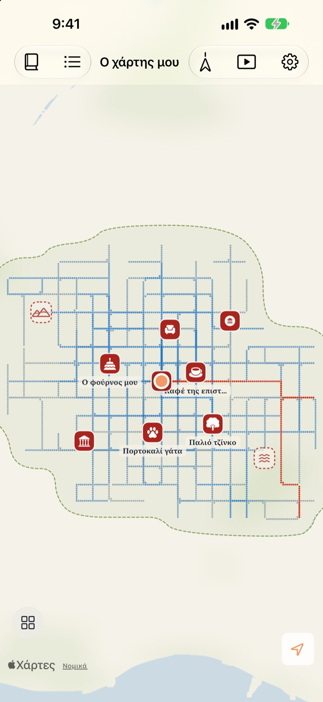
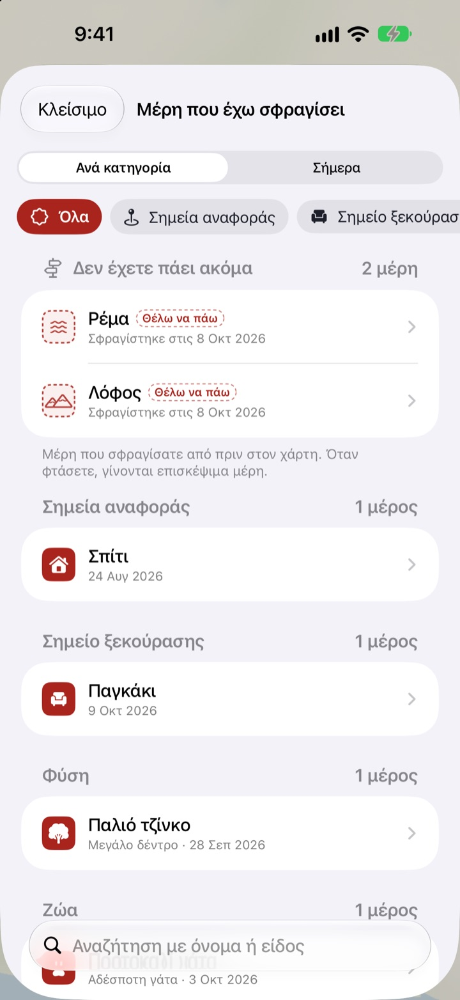
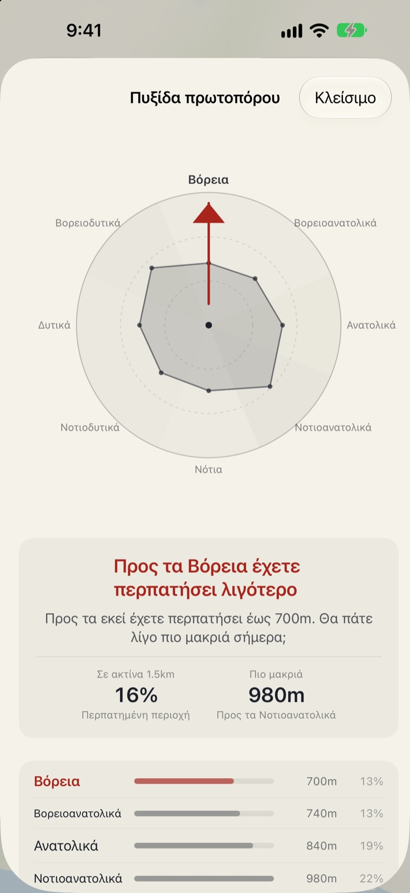
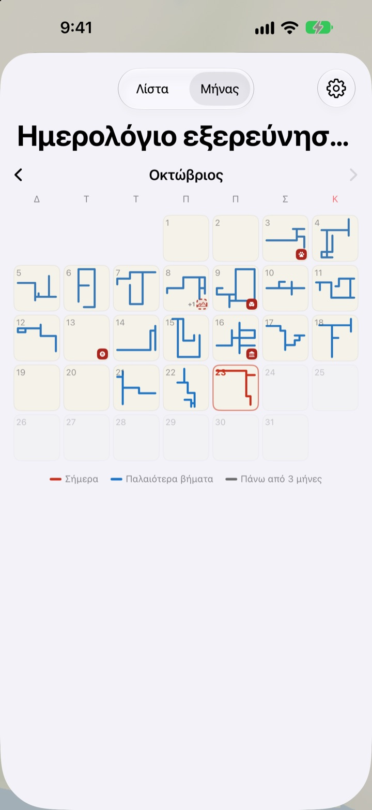

Ένας χάρτης που γεμίζει
μόνο με τα πόδια
Ξεκινά σαν ένα λευκό χαρτί. Γεμίζουν, σημείο σημείο, μόνο τα μέρη που περπατάτε, και αν περάσετε εκατό φορές από τον ίδιο δρόμο δεν πλαταίνει. Για να μεγαλώσει ο χάρτης, πάρτε έναν καινούργιο δρόμο.
Όλες οι λειτουργίες δωρεάν, χωρίς διαφημίσεις.

Κάντε μια βόλτα
Σύρετε το δάχτυλο ή το ποντίκι πάνω στο χαρτί για να περπατήσετε. Οι μπλε κουκκίδες είναι δρόμοι που έχετε ήδη περπατήσει. Δείτε πώς αλλάζει «Η σημερινή διαδρομή» όταν ξαναπερνάτε από εκεί και όταν πηγαίνετε κάπου καινούργιο.
Κάθε μέρα τους ίδιους δρόμους;
Ο βηματομετρητής μετρά βήματα, αλλά δεν ρωτά ποτέ πού σας πήγαν. Σπίτι, σταθμός και πίσω, και ο κύκλος γεμίζει μια χαρά, ενώ το στενό δίπλα μένει μυστήριο για χρόνια. Το Buktu Buktu μετρά μόνο τους δρόμους που περπατάτε για πρώτη φορά. Ένας καλός λόγος να κάνετε σήμερα μια παράκαμψη ενός τετραγώνου.
Σφραγίστε τα μέρη που πήγατε και που θέλετε να πάτε
Σφραγίστε το σημείο όπου στέκεστε ή πατήστε παρατεταμένα οπουδήποτε στον χάρτη. Υπάρχουν 212 σφραγίδες για να διαλέξετε, ταξινομημένες ανά κατηγορία.
Μια σφραγίδα σε μέρος που δεν έχετε περπατήσει ποτέ μένει ως μέρος προς επίσκεψη και γίνεται μέρος που επισκεφθήκατε μόλις πάτε πραγματικά. Φωτογραφίστε την ταμπέλα ενός μαγαζιού και το φόντο αποκόπτεται, ώστε η ταμπέλα να στέκεται σαν αυτοκόλλητο σε εκείνο το σημείο.

Επόμενη βόλτα: προς τα εκεί που πήγατε λιγότερο
Η Πυξίδα πρωτοπόρου χωρίζει την περιοχή γύρω σας σε οκτώ κατευθύνσεις και δείχνει εκείνη που έχετε περπατήσει λιγότερο.
Τα σημερινά αποτυπώματα παρατάσσουν με τη σειρά τα μέρη όπου σταματήσατε σήμερα, μαζί με την απόσταση που περπατήσατε ανάμεσά τους.

Κάθε μέρα αφήνει ένα σχήμα
Το ημερολόγιο σχεδιάζει το σχήμα της βόλτας κάθε μέρας αντί για έναν αριθμό. Κρατήστε ημερολόγιο με κείμενο και φωτογραφίες και δείτε πόσο από κάθε βόλτα ήταν καινούργιο έδαφος.
Διαλέξτε μια περίοδο και δείτε τον χάρτη σας να σχεδιάζεται σε βίντεο που μπορείτε να εξαγάγετε.

Ξεκινήστε σε τρία βήματα
- 1
Ανοίξτε την εφαρμογή
Ένα λευκό χαρτί ξεδιπλώνεται.
- 2
Επιτρέψτε την τοποθεσία
Επιλέξτε «Πάντα» και ενεργοποιήστε την «Κίνηση και φυσική κατάσταση» για να καταγράφονται οι βόλτες χωρίς να ανοίγετε την εφαρμογή.
- 3
Βγείτε έξω
Όσο πιο άγνωστος ο δρόμος, τόσο περισσότερο μεγαλώνει ο χάρτης.
Πώς διαβάζεται ο χάρτης
- Κόκκινες κουκκίδες
- όπου περπατήσατε σήμερα
- Λουλακί κουκκίδες
- παλαιότερα βήματα, πιο σκούρα όπου περνάτε πιο συχνά
- Γκρι κουκκίδες
- μέρη όπου δεν έχετε ξαναπάει για πάνω από τρεις μήνες. Ξεθωριάζουν αλλά δεν χάνονται ποτέ
- Διακεκομμένη σφραγίδα
- ένα μέρος στο «Θέλω να πάω». Γίνεται μέρος που επισκεφθήκατε μόλις φτάσετε εκεί
- Οι δρόμοι που έχω σχεδιάσει
- συνολικό μήκος όλων των δρόμων που περπατήσατε για πρώτη φορά
- Η σημερινή διαδρομή
- πόσο από τη σημερινή βόλτα ήταν καινούργιο
- Προβολή όλων μαζί
- στις ρυθμίσεις· ανοίγει την Πυξίδα πρωτοπόρου, τα Σημερινά αποτυπώματα και το φιλμ του χάρτη σας
Διαλέξτε ανάμεσα στον χάρτη με μελάνι και τον Ζωγραφισμένο χάρτη.
Όλες οι λειτουργίες είναι δωρεάν
Δωρεάν
- Ένας χάρτης που γεμίζει μόνο με τα πόδια, με καταμέτρηση νέων δρόμων
- 212 σφραγίδες και αυτοκόλλητα από ταμπέλες
- Πυξίδα πρωτοπόρου και Τα σημερινά αποτυπώματα
- Ημερολόγιο μήνα και καθημερινό ημερολόγιο με κείμενο και φωτογραφίες
- Εξαγωγή του βίντεο με τον χάρτη σας να σχεδιάζεται
- Widget για την αρχική οθόνη και την οθόνη κλειδώματος
- Συγχρονισμός μέσω iCloud ανάμεσα σε συσκευές
Στηρίξτε τον δημιουργό
- Αν θέλετε, αφήστε ένα μικρό φιλοδώρημα από τις ρυθμίσεις
- Το φιλοδώρημα δεν ξεκλειδώνει τίποτα. Η εφαρμογή μένει ίδια
Χωρίς διαφημίσεις, χωρίς συνδρομή.
Ερωτήσεις
Περπάτησα, αλλά δεν εμφανίστηκε τίποτα στον χάρτη.
Πηγαίνετε στις Ρυθμίσεις > Buktu Buktu > Τοποθεσία, επιλέξτε «Πάντα» και ενεργοποιήστε την «Κίνηση και φυσική κατάσταση». Έτσι η καταγραφή γίνεται ακόμα και με κλειστή την εφαρμογή. Αν στις ρυθμίσεις της εφαρμογής διαλέξατε τον τρόπο καταγραφής που εξοικονομεί μπαταρία, ανοίξτε την εφαρμογή πριν ξεκινήσετε. Οι τοποθεσίες με χαμηλή ακρίβεια αποθηκεύονται, αλλά δεν σχεδιάζονται.
Καταγράφονται οι διαδρομές με αυτοκίνητο ή μετρό;
Όχι. Η εφαρμογή χρησιμοποιεί δεδομένα κίνησης και την ταχύτητα για να σχεδιάζει μόνο περπάτημα και τρέξιμο, και αφήνει έξω τα τμήματα που μοιάζουν με όχημα. Σπάνια μπορεί να κάνει λάθος.
Περπατώ κάθε μέρα την ίδια διαδρομή και ο χάρτης δεν μεγαλώνει.
Αυτός είναι ο κανόνας. Ό,τι βρίσκεται σε απόσταση έως 30 m από εκεί που έχετε ήδη περπατήσει μετρά ως ο ίδιος δρόμος, οπότε μόνο οι νέοι δρόμοι προστίθενται στο «Οι δρόμοι που έχω σχεδιάσει». Και το απέναντι πεζοδρόμιο μετρά ως ο ίδιος δρόμος. Η Πυξίδα πρωτοπόρου σας δείχνει πού έχετε περπατήσει λιγότερο.
Στέλνεται κάπου η τοποθεσία μου;
Όχι στον δημιουργό. Τα βήματα, οι σφραγίδες, το ημερολόγιο και οι φωτογραφίες μένουν στη συσκευή σας και στο προσωπικό σας iCloud, και ο δημιουργός δεν μπορεί να τα δει. Τα ανώνυμα στατιστικά χρήσης δεν περιλαμβάνουν ποτέ συντεταγμένες, κείμενο ημερολογίου, ονόματα μερών ή φωτογραφίες. Για τη μετατροπή συντεταγμένων σε ονόματα μερών χρησιμοποιούνται υπηρεσίες των Χαρτών της Apple. Για λεπτομέρειες δείτε την Πολιτική απορρήτου παρακάτω.
Θα μεταφερθούν οι καταγραφές μου σε νέα συσκευή;
Ναι. Συνδεθείτε με τον ίδιο Λογαριασμό Apple στη νέα συσκευή και αφήστε το iCloud ενεργό, και τα βήματα, οι σφραγίδες, το ημερολόγιο και οι φωτογραφίες σας θα έρθουν μαζί.
Πώς διαγράφω μια σφραγίδα ή μια φωτογραφία;
Διαγράψτε σφραγίδες από τη λίστα «Μέρη που έχω σφραγίσει» και πατήστε παρατεταμένα μια φωτογραφία του ημερολογίου για να τη διαγράψετε. Ένας τρόπος να σβήσετε με τη μία όλους τους δρόμους και τις εγγραφές ημερολογίου είναι στα σχέδιά μας.
Πώς προσθέτω το widget;
Αγγίξτε παρατεταμένα την αρχική οθόνη, πατήστε «Επεξεργασία» > «Προσθήκη widget» και επιλέξτε Buktu Buktu. Για την οθόνη κλειδώματος, αγγίξτε την παρατεταμένα και πατήστε «Προσαρμογή». Το widget της αρχικής οθόνης δείχνει το σχήμα και το μήκος της σημερινής διαδρομής, ενώ της οθόνης κλειδώματος τη σημερινή απόσταση.
Τι χρειάζομαι;
Ένα iPhone με iOS 17.0 ή νεότερο.
Πώς επικοινωνώ μαζί σας;
Στείλτε σχόλια από τις ρυθμίσεις της εφαρμογής ή γράψτε μας στη διεύθυνση παρακάτω. Θα απαντήσουμε το συντομότερο.
Ερωτήσεις ή σχόλια; Γράψτε στο leeo@kakao.com.